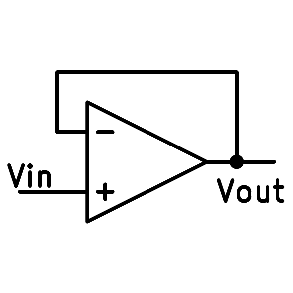
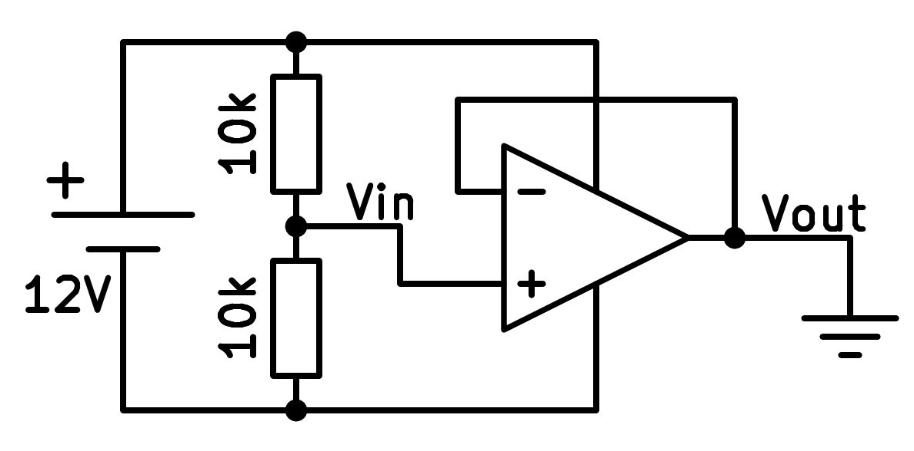

16. L'amplificador de seguidors¶
Aquest és l’esquema més senzill que es pot connectar amb un amplificador operatiu. Aquest esquema serveix per obtenir la mateixa tensió a la sortida de l'amplificador que té la seva entrada positiva.
{kind=link}

Esquema de l'amplificador operatiu del seguidor.¶
Aquest esquema és útil quan volem obtenir una tensió estable i amb una baixa resistència de sortida d’una font de tensió amb alta resistència, cosa que canviaria la seva tensió si connectem el corrent.
Un exemple pràctic d’utilitzar un amplificador de seguidor és el circuit següent que genera una tensió terrestre virtual a partir d’un divisor de tensió resistent:
{kind=link}

L’amplificador de seguidors s’utilitza per generar una tensió de terra virtual.¶
Comentaris negatius¶
De manera que un amplificador operatiu és estable ha de tenir una retroalimentació negativa ** **. Això significa que la tensió de sortida ha d’arribar al terminal negatiu de l’entrada.
Si la tensió de sortida augmenta, la tensió d’entrada negativa augmentarà i això produirà una disminució de la tensió de sortida.
Si, al contrari, la tensió de sortida disminueix, la tensió d’entrada negativa disminuirà i això produirà un augment de la tensió de sortida.
A mesura que els canvis de tensió de la sortida tendeixen a compensar, el resultat serà que la sortida tindrà la mateixa tensió que l’entrada.
** Amb una retroalimentació negativa, els dos terminals d’entrada tindran la mateixa tensió **.
Simulació¶
A la simulació següent podem veure un amplificador de seguidor utilitzat per copiar la tensió d’un díode zener. Això permet alimentar un circuit amb corrent relativament elevat, cosa que canviaria la tensió Zener si connectem directament una càrrega.
Exercicis¶
Dibuixa l’esquema simplificat d’un amplificador operatiu de seguidors.
Dibuixa un esquema real d’un amplificador operatiu seguidor que serveixi per generar una terra virtual.
Dibuixa un esquema real d’un amplificador operatiu seguidor que serveixi per generar una tensió de sortida estable d’un díode zener.
En la simulació anterior, el valor de resistència R1 canvia amb la barra de control a la dreta. Què passa amb la tensió de resistència? Per què creus que passa això?
A la simulació anterior, canvieu el valor de la resistència R2 amb la barra de control a la dreta. Què passa amb la tensió de resistència? Per què creus que passa això?
En la simulació anterior, si fem que el valor de la resistència R2 arribi molt baix, arribarà un moment en què l’amplificador operatiu no podrà lliurar prou corrent i la tensió caurà. Quin corrent màxim pot lliurar l'amplificador operatiu?
Amb la llei d’Ohm, calculeu la resistència mínima que podem connectar de manera que es mantingui la tensió de sortida en 5 volts.